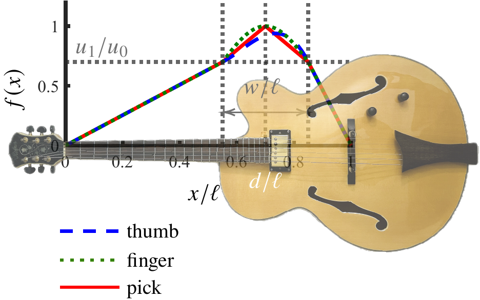

Initial conditions
- The initial displacement is \(u(x,t) = u_0f(x) h(t)\), where
\begin{align}
f(x) &= \begin{cases}
\frac{x u_1/u_0}{d-w/2}, &0\leq x < d-\tfrac{w}{2}\\
g(x), & d-\tfrac{w}{2} \leq x \leq d+\tfrac{w}{2}\\
\frac{(\ell-x)u_1/u_0}{\ell - d - w/2} , & d+\tfrac{w}{2} < x \leq \ell\end{cases} \label{eq:source:f}
\end{align}

[← previous]
[Slide 9]
[next →]